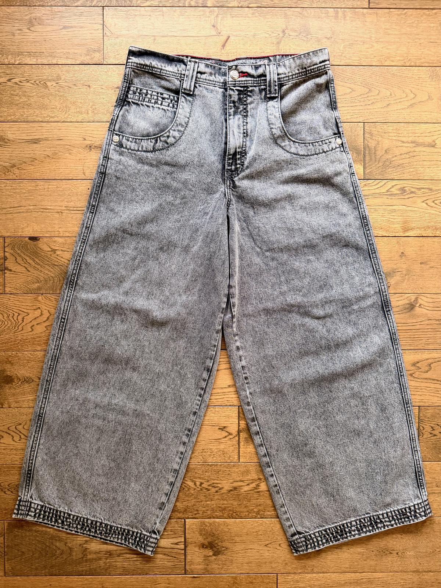
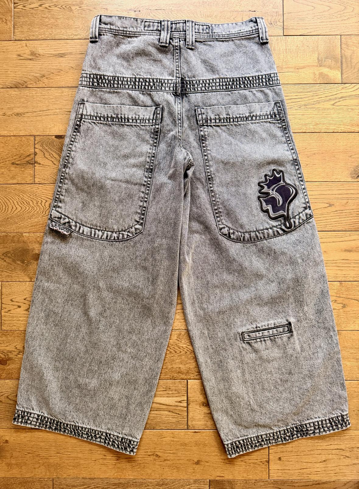
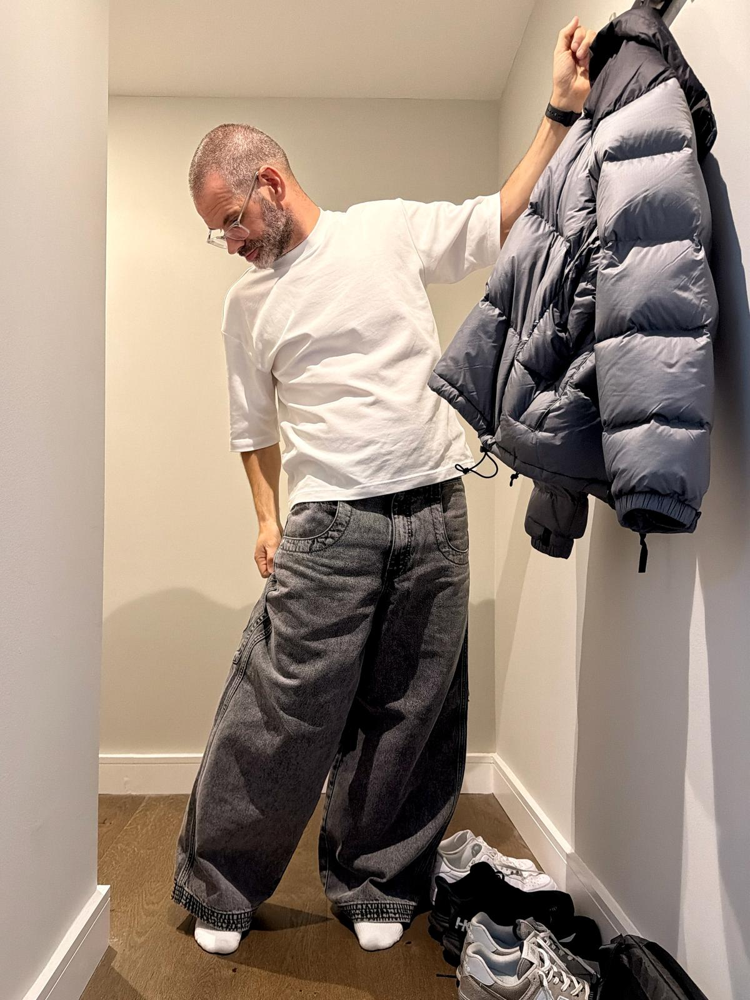
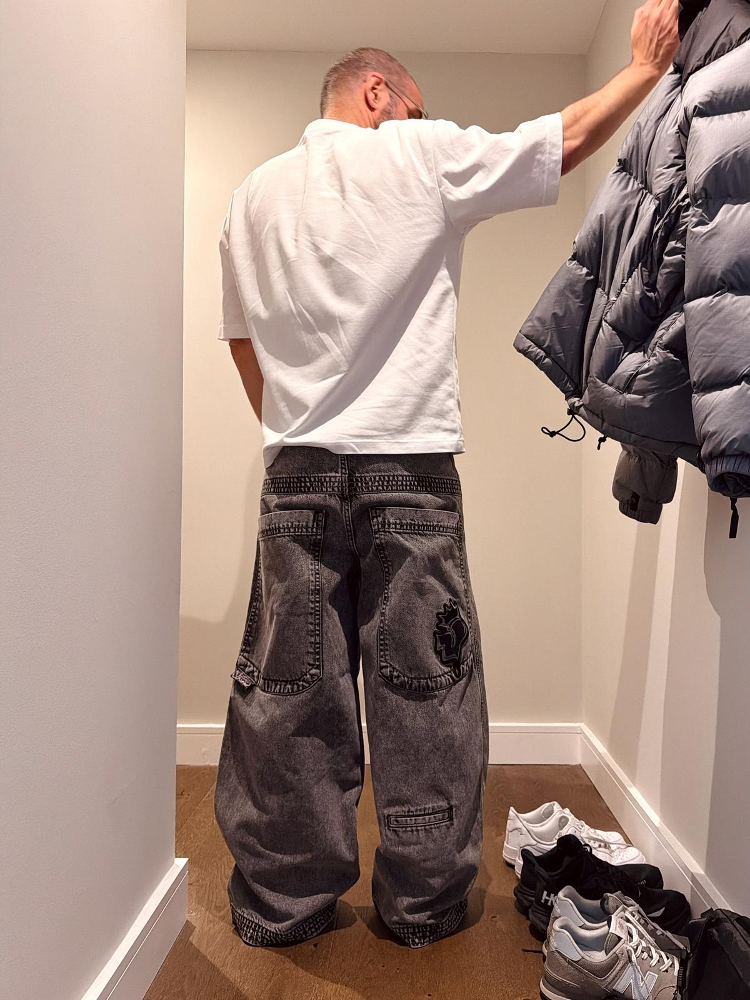
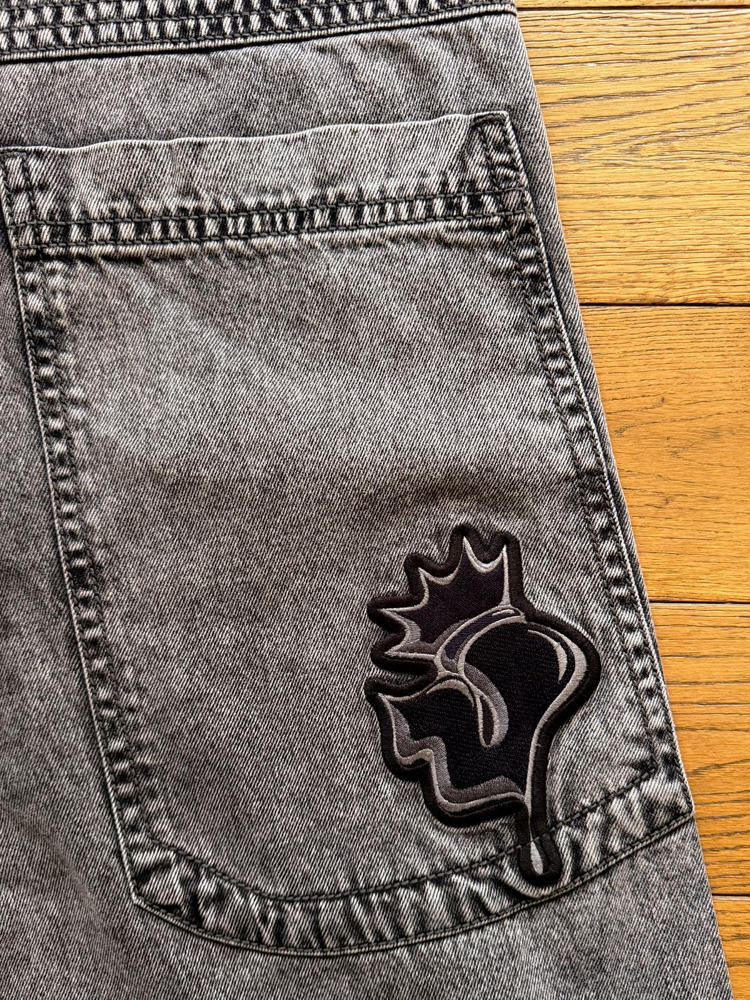
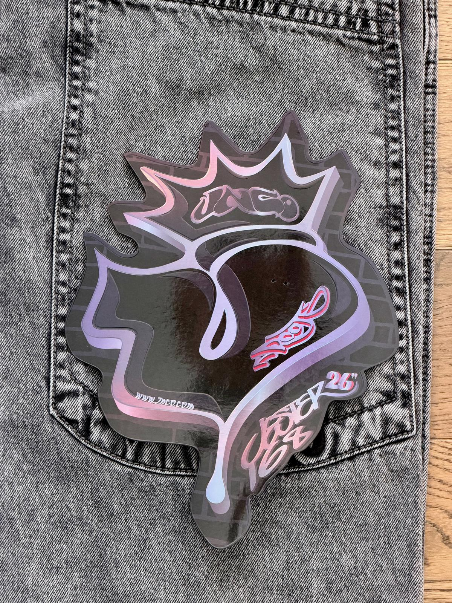

After buying three pairs of blue JNCO jeans with increasingly wide legs, I wanted a different colour and something that felt like an easy everyday choice, like the Twin Cannons.
I was choosing between the 20” Lowdowns and the 26” Jesters, and based on looks, I went with the Jesters in vintage black.
I’m very happy with that choice, and I think the Jesters are the JNCOs I will be wearing the most.
I think they look really good with their big, deep back pockets, and bending down far to get my phone out is a price worth paying. I was worried the multi-stitch details on the hems and the back would be a bit much, but I think they add just enough interest.


With 26” leg openings, the fit is pretty much identical to the Twin Cannons. I find this to be the perfect combination of width and daily ease of wear.


The black-on-black embroidery on the back pocket is muted, which suits the everyday wear I’m aiming for with this pair.

The only thing I would say is that the flasher perhaps is a bit meh compared to some other models, but it’s just lying in my drawer at home anyway.
